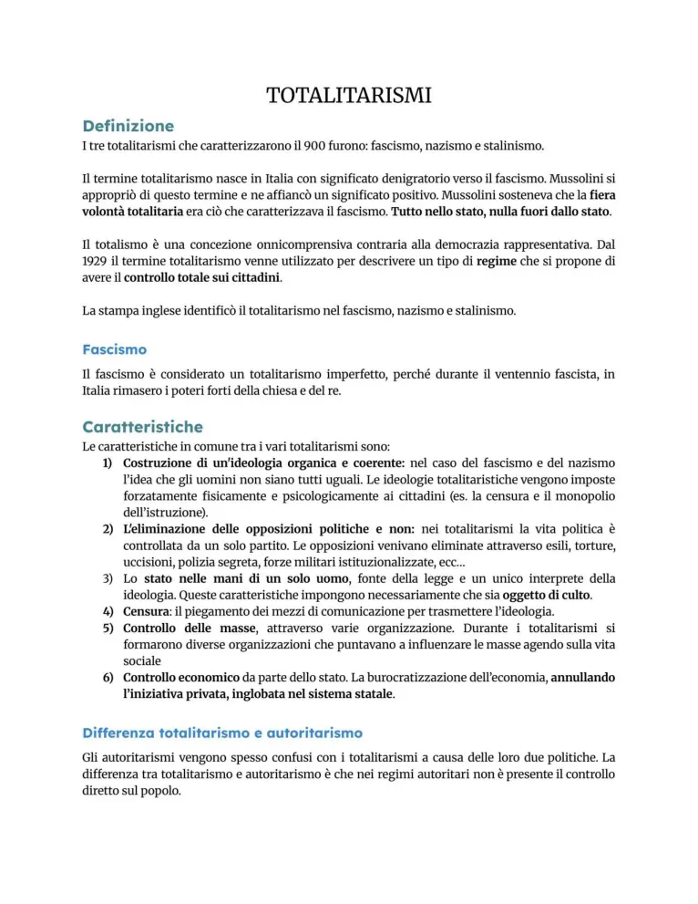
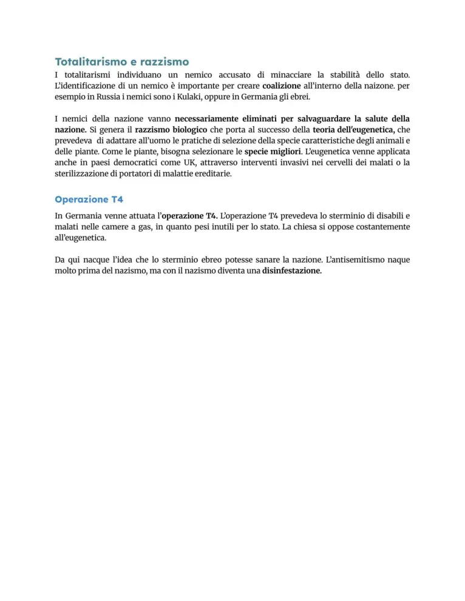
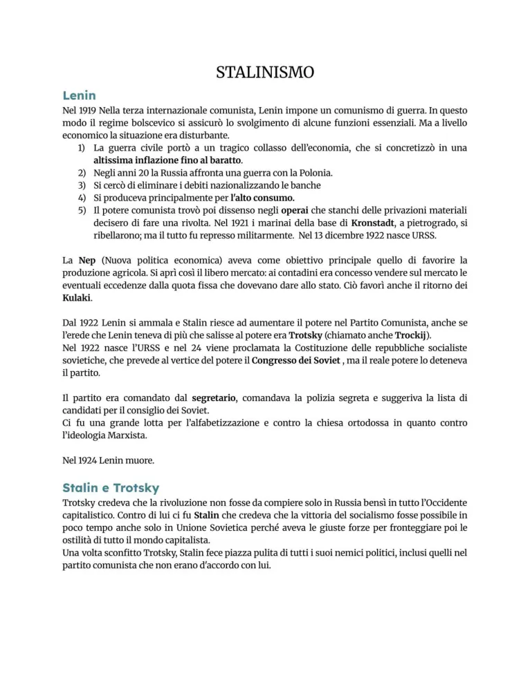
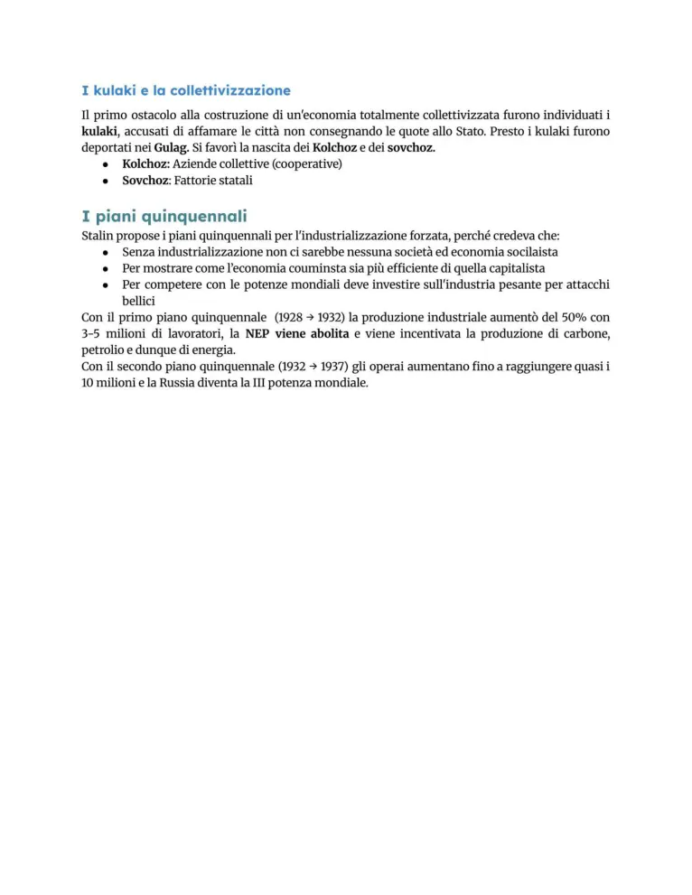
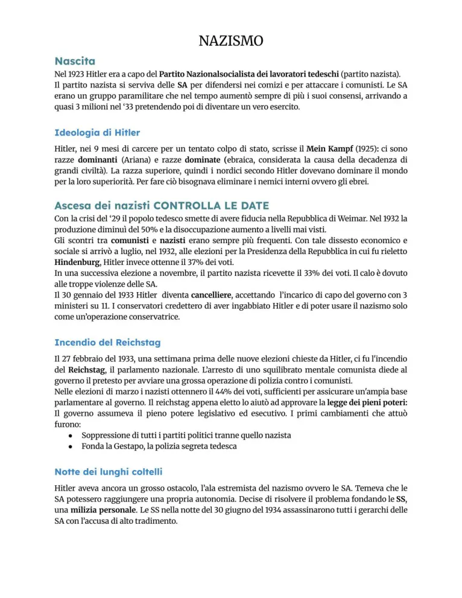
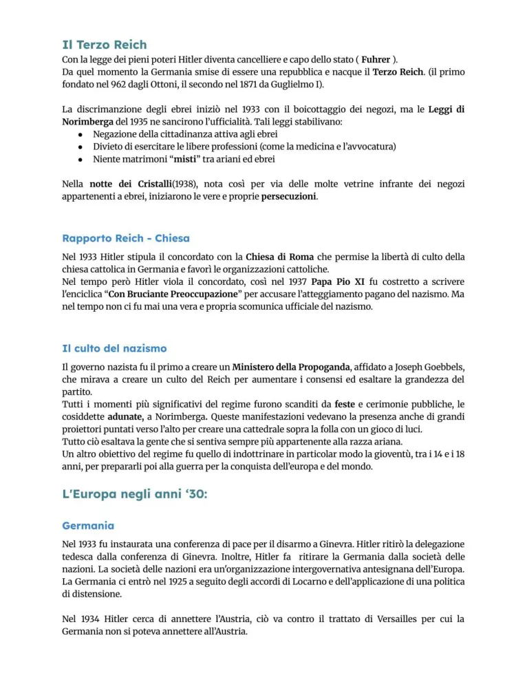
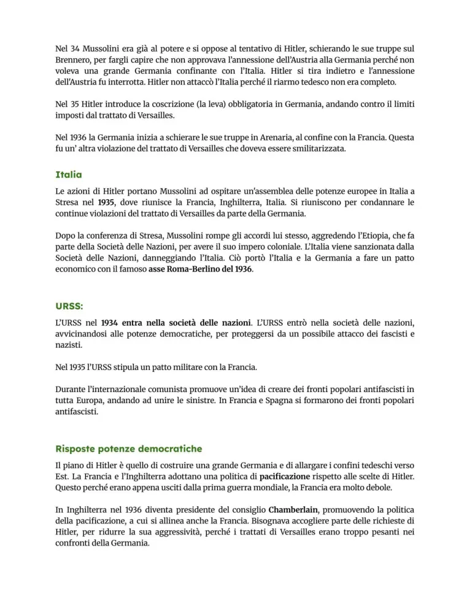
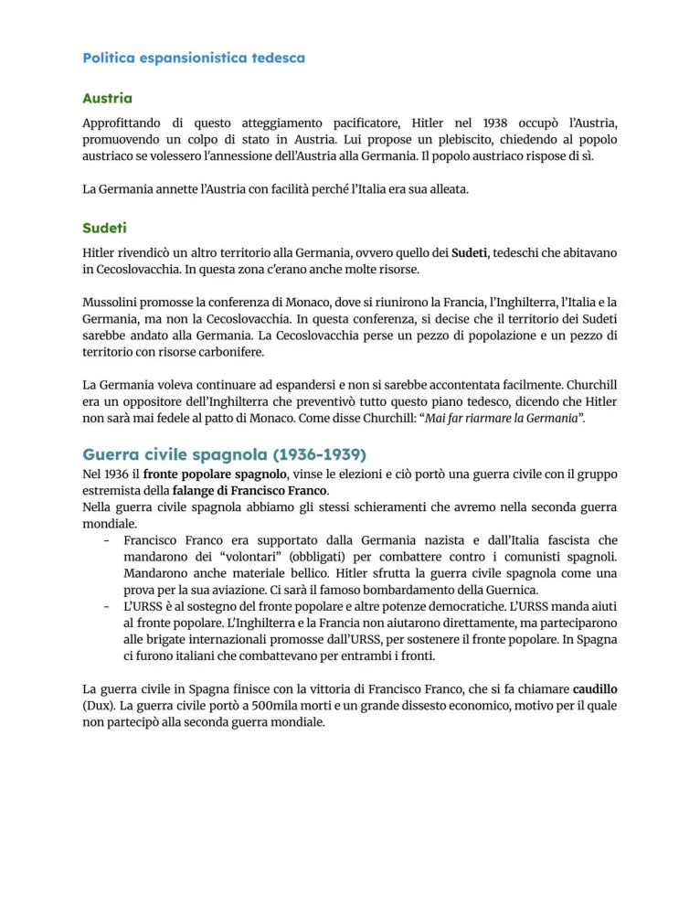

Totalitarismi, stalinismo e nazismo
Caratteri del totalitarismo, URSS di Stalin, Germania nazista, razzismo e politica espansionistica.
Studio guidato
Totalitarismo
Un regime totalitario vuole controllare politica, società, economia, cultura e vita privata. Usa partito unico, capo carismatico, propaganda, censura, polizia politica, terrore e mobilitazione delle masse.
Stalinismo
Stalin consolida il potere nell’URSS dopo Lenin. Collettivizzazione forzata, piani quinquennali, industrializzazione accelerata, gulag e grandi purghe trasformano il Paese e reprimono ogni opposizione.
Nazismo
Il nazismo nasce nella crisi della Repubblica di Weimar. Hitler sfrutta nazionalismo, revanscismo, antisemitismo, paura del comunismo e crisi economica. Nel 1933 diventa cancelliere e costruisce rapidamente la dittatura.
Ideologia nazista
Il nazismo si fonda su razzismo, antisemitismo, mito della razza ariana, Führerprinzip, anticomunismo e ricerca dello spazio vitale. Le leggi di Norimberga del 1935 escludono gli ebrei dalla cittadinanza piena.
Verso la guerra
La politica estera nazista mira a distruggere l’ordine di Versailles: riarmo, Anschluss, Sudeti, patto di Monaco e aggressione alla Polonia preparano la Seconda guerra mondiale.
Parole chiave
Pagine originali dal file
Le immagini sotto mantengono il riferimento diretto alle pagine del PDF usato come base del sito.








Quiz finale
Devi rispondere correttamente a tutte le 12 domande. Se ne sbagli anche solo una, il quiz si azzera e ricomincia da capo.